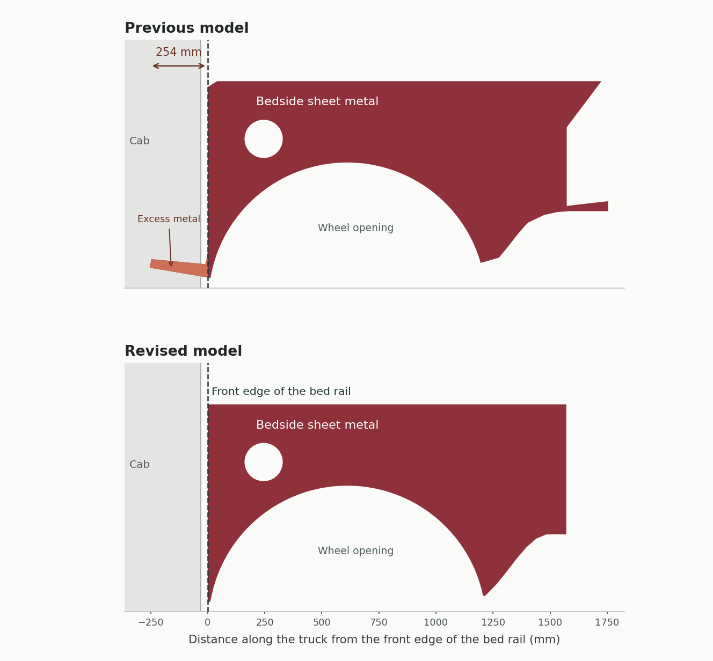
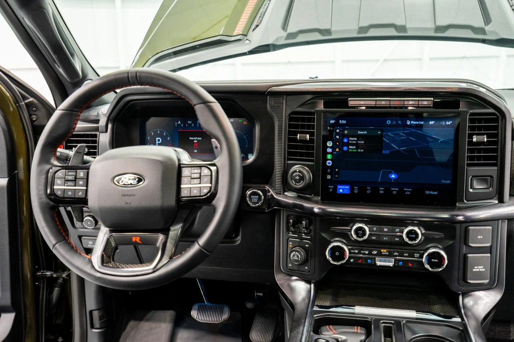
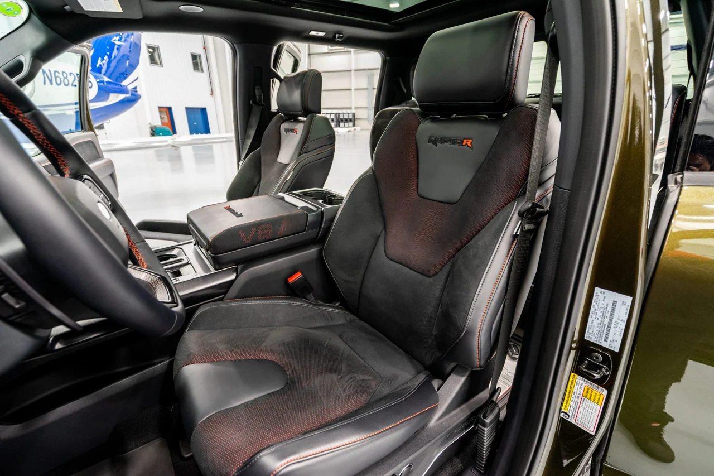
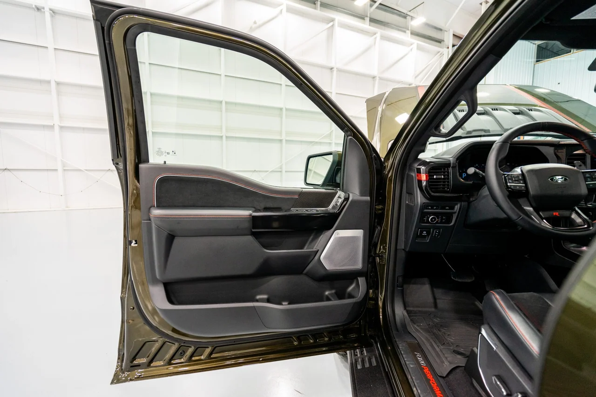

01Front
Open in 3D


Compare the grille surround, the headlamp outlines and the bumper’s fog-lamp pockets and centre opening.
Compare the Rapid Red model with Ford’s official F-150 Raptor 360° view: twelve frames about 30° apart, all the way round, and five zoomed details from the same frames. The model is rendered from each frame’s calibrated camera. Interior and powertrain views compare with photographs of a Shelter Green 2024 Raptor R. Choose Pairs for a side-by-side view, Wipe to slide between the images, or Shape to inspect model edges over the reference.
This revision rebuilds the exterior body against Ford’s own imagery. Ford’s F-150 Raptor 360° view provides 36 studio renders of the Raptor body. Their cameras were solved from the wheel hubs and lug patterns, with the 3,693 mm wheelbase fixing the scale. The cab, glass, hood, fenders, bed, bumpers and lamps were then fitted to those views and to Ford’s Raptor R dimensions. Close photographs of the Bring a Trailer truck set the details: the C-clamp headlamp light guides, the layered taillamp light pipes, the three-scoop hood extractor, the tailgate lettering, fog lamps, exhaust outlets and hitch. The frame, suspension, wheels, engine and cabin are carried over. The cabin trim and the top of the engine were trimmed to clear the new glass and hood.
| Check | Ford | Previous model | Current model |
|---|---|---|---|
| Approach angle | 33.1° | 32.6° | 33.3° |
| Departure angle | 24.9° | 26.2° | 24.9° |
| Breakover angle | 24.4° | 23.8° | 23.8° |
| Cab-to-bed longitudinal clearance | — | 30.00 | 13.08 |
| Closed tonneau panel tops | — | −0.02, −0.02, −0.02 | +1.00, +1.00, +1.00 |
| Hood-to-lens vertical gap across sampled sections | — | 5.00 | 12.77–31.12 |
| Ground clearance | 333 | 333.00 | 333.00 |
The previous model is the one this rebuild replaces. Neither model’s painted panels touch the headlamp lenses or grille frame, and in both the hood swings from closed to 48° without striking the fixed front panels.
| Dimension | Ford | Previous model | Current model |
|---|---|---|---|
| Overall length | 5,908 | 5,908 | 5,861 |
| Wheelbase | 3,693 | 3,693 | 3,693 |
| Width without mirrors | 2,210 | 2,210 | 2,210 |
| Width with mirrors | 2,438 | 2,438 | 2,440 |
| Overall height | 2,047 | 2,047 | 2,049 |
| Front track | 1,887 | 1,887 | 1,887 |
| Rear track | 1,877 | 1,877 | 1,877 |
| Ground clearance | 333 | 333 | 333 |
Length and width use the outermost mesh vertices. Height and ground clearance are measured from the tire contact plane. Track and wheelbase use the four wheel centers. The current model is 47 mm shorter than Ford’s published overall length. Ford’s calibrated side renders place both bumper faces within about 2 cm of this model at their most prominent heights, and the model matches Ford’s approach and departure angles, so the bumpers were not stretched to the published figure. The source of the difference is unresolved. These checks do not certify every panel contour, mechanical detail or factory tolerance. The exterior comparisons below use Ford’s renders, with each frame’s calibrated camera refined by a rigid silhouette registration; the interior and powertrain photographs use estimated cameras.
The official dimensioned schematics below explain the source geometry and which Raptor R specifications override the shared F-150 drawings.

Measurements and model hashes · Correction provenance and sources · Download the Blender measurement script
Ford Pro 2024 Body Builders Layout Book, pages 6–8 contains dimensioned plan and side views, the Regular/Super/Crew cab table, and pickup-box drawings. These support the shared F-150 cab and 5.5-foot box layout. The overlaid outlines are not an exact Raptor R body blueprint.
Ford Mexico’s 2024 Raptor brochure, page 14 adds a dimensioned side/rear schematic. Its generic outline and listed 2,049 mm width do not match the dedicated US Raptor R width specification. This model uses the US 2024 Raptor R figures, including 2,210 mm without mirrors, with photographs guiding Raptor-specific exterior details.


Zoomed crops of Ford’s 360° frames show where the hood’s downturned lip, the headlamp and the front fender meet. Each crop sits beside the current model, rendered from the same calibrated camera, and the model’s outline drawn over Ford’s render.


The model leaves about 13 mm between the hood lip and the top of the lens, and no painted panel touches a lens or the grille frame. The hood clears the fixed front panels from closed to 48°. The measured values are under Current rebuild and measured dimensions.
Inspect the headlight in 3D · Measurements and model hashes · Download the Blender measurement script
Compare the grille surround, the headlamp outlines and the bumper’s fog-lamp pockets and centre opening.


Follow the hood edge into the headlamp, the amber C-clamp light guide and the fender line back to the mirror.


The headlamp’s slanted rear edge, the fender vent and the front flare are seen almost side-on.


Check the roofline, the window openings, the door cuts and both flares against Ford’s side elevation.


Compare the bedside, the fuel door and the taillamp’s side face, which turns toward the rear as the bed tapers.


Ford’s camera is about 7° above level here. The render shows an uncovered bed; the model keeps its closed hard tonneau level with the rails.


Compare the tailgate lettering band, the taillamp widths and the stepped bumper with its exhaust outlets below the corners.


Compare the taillamp’s layered light pipes, the bumper end cap and the right-hand exhaust outlet.


The right bedside has no fuel door. Compare the rear flare and the bed-rail line.


Compare the right side elevation, including the mirror, the door handles and the running board.


Compare the right front flare, the fender vent and the headlamp’s side face.


Compare the right headlamp, the fog-lamp pocket and the skid plate below the recovery hooks.


Compare the FORD letters, the three amber marker lamps, the bumper’s centre opening and the orange recovery hooks above the skid plate.


Follow the amber C-clamp light guide along the top of the lamp and down its slanted rear edge, and the hood’s downturned lip above the lens.


Ford’s cameras sit below the hood, so the extractor appears only as the scoop profiles rising above the hood edge.


This crop is aligned on the wheel rather than the body: Ford renders the body 62 mm lower on its wheels than the published ride height. The tread is an approximation, not a tire scan.


Compare the folded light pipes, the clear reverse strip, the body-colour pillar around the lamp and the bedside graphic.


Compare the position of the steering wheel, cluster and center screen. The showroom and studio casts and reflections differ.


Use the wheel rim, center stripe and spokes to compare their placement against the instrument cluster.


Compare the vertical vents, screen surround and control rows. Dashboard controls and graphics are simplified.


The door is open for a view of the front seat bolsters, head restraints and upholstery.


The driver door is open. Compare the armrest, handle recess, speaker grille and storage pocket.


The model has the requested solid roof. The photographed vehicle has a moonroof. The rear bench and cabin opening can be compared here.


The open hood exposes the supercharger, intake and reservoir. The internal parts and hose routing are illustrative.


Compare the supercharger location and the intake route. This camera is an approximate match to the engine-bay photograph.


The front guard reaches forward under the recovery hooks, as in Ford’s side renders, and meets the middle guard. Compare the narrowing underside and the lateral clearance to the suspension.